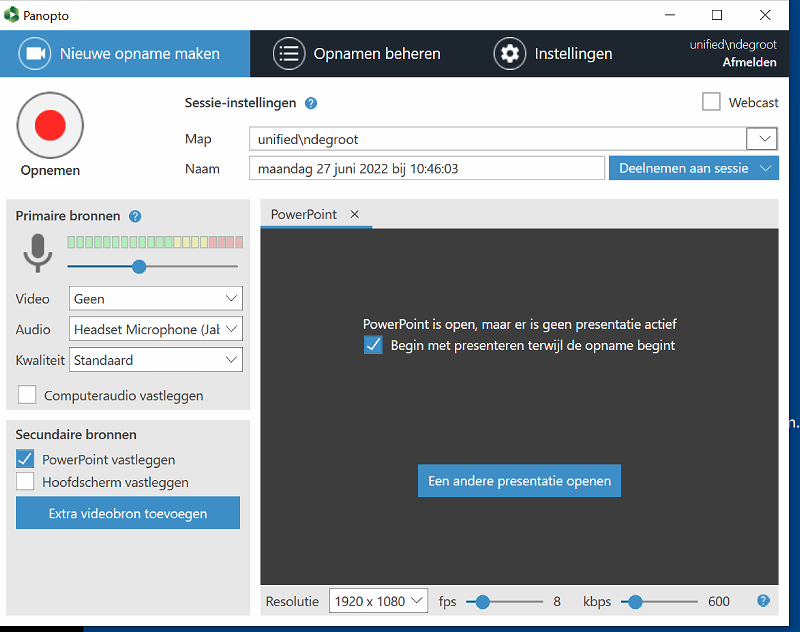

HL Panopto¶
Inleiding¶
Panopto is de opvolger voor Mediasite. Zie Tiu Panopto pagina voor een toelichting. Hieronder staat een beschrijving hoe je Panopto - als losse toepassing installeert. Dan heb je je de meeste gebruiksmogelijkheden. Maar het is ook mogelijk om de Panopto webapp te gebruiken, dat is voor eenvoudig gebruik ook al voldoende. En voor het maken van Panopto opnamen in je cursus in Canvas kun je de Canvasinstructie volgen Daarnaast kun je opnamen maken met je smartphone of Tablet. Zie hiervoor Panopto Mobile
1. Panopto webapp¶
- Je gaat naar de TiU/Panopto website
- Klik op [+ Maken]
- Kies Panopto Capture of ga rechtstreeks naar https://tilburguniversity.cloud.panopto.eu/Panopto/Pages/Capture.aspx
- Controleer de instellingen met de knoppen voor Audio en Video en kies een het scherm of een venster als videobron met de knop (Schermen en apps)
- Om een Powerpoint op te nemen als extra videobron dien je deze in de presentatie stand te zetten en dan via de toetscombinatie {Alt}+{Tab} terug te gaan naar de Panopto webapp en daar de opname te starten met de rode knop en dan direct via de knop(Schermen en apps) het Powerpoint venster te selecteren en daar de dia's te bladeren. N.B. Op een Mac computer kun je alleen met het contextmenu (rechtsklik) in de dia's bladeren.
- Na het stoppen van de opname kun je de opname delen, zie hieronder bij '3. De opname instellen en delen'
2. Panopto toepassing (Mac of Windows)¶
2.1 Starten¶
Je gaat naar de TiU/Panopto website
- Klik op [+ Maken]
- kies [Panopto voor Mac] of [Panopto voor Window]
- (eenmalig) Kies [Panopto downloaden] om de Panopto client lokaal te installeren
- Kies [ Panopto Openen] Vink (eenmalig) aan 'Altijd toestaan dat de https://tilburguniversity.cloud.panopto.eu link opent met de app' en dan kies dan [Panopto openen]
- (Bij inlog fout opnieuw proberen)
- Daarna wordt je verwezen naar SURFconext en volgt (eenmalig) weer een melding 'Toestaan dat SURFconext de link opent'
- Nu start Panopto (en kun je een tour volgen of klikken op [tour skippen])
2.2 De opname maken¶
Er zijn verschillende optie om het beeld van de camera en het geluid al dan niet te combineren met een of meer videobronnen. We gaan hier uit van Powerpoint als (enige, extra) videobron.
- Controleer of de videocamera geselecteerd is bij 'Video' en bij audio de microfoon van de webcam of van een eventuele koptelefoon
- Open de PowerPoint presentatie (Je hoeft niet zelf de presentatie-stand te kiezen) Nu verschijnt in Panopto een nieuw tabblad 'Powerpoint'
- Verwijder het andere tabblad 'Hoofdscherm'.
- Vink alleen aan 'Powerpoint vastleggen'
- Vink aan 'begin met presenteren terwijl(als) de opname begint' Het venster ziet er nu zo uit:
-

-
Start de opname, de presentatie verschijnt nu full screen. Bedien de Powerpoint met de cursortoetsen of de muis.
- Klaar? Gebruik de toetscombinatie {Alt}+{Tab} om terug te gaan naar Panopto en stop met de opname (rode vierkant [stop]) of druk op functietoets {f10}. De opname wordt nu - na bevestiging met de knop [klaar] opgestuurd naar de centrale Panopto server en verwerkt.
3 De opname instellen en delen¶
- Ga naar je (centrale)opnamen door op de blauwe link 'Mijn opnames beheren' te klikken.
- Ga met de muis naar je recente opname en klik op [Delen] en dan op de blauwe link 'Wijzigen'.
-
Maak een keuze. Voor een openbare link kies 'Openbaar'
- Gebruik de knop [Koppeling kopiëren] op de link op te halen en ergens anders te plakken, bijvoorbeeld in een mailbericht of een nieuwsbrief.
- Via de knop [overzicht] zijn nog aanpassingen te maken en bijvoorbeeld datums van beschikbaarheid in te stellen. Hier kun je de video editten, aanvullen en bijvoorbeeld ook voorzien van ondertiteling.
Instructie materiaal en video's¶
TeacherDesk¶
Voor technische ondersteuning en vragen kun je tijdens kantooruren contact opnemen met de TeacherDesk.
juni 2022, Nico de Groot
gepubliceerd op